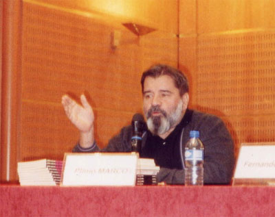

Início / Prêmios
ReconhecimentoPrêmios e homenagens
Molière, Jabuti, Shell, Mambembe. E teatros, salas, praças e prêmios que hoje levam o seu nome.
Teatro amador
1958
Melhor ator
Festival Regional de Teatro Amador, Santos1959
Melhor diretor
II Festival de Teatro Amador, Santos1959
Melhor espetáculo — Barrela
II Festival de Teatro Amador, Santos1960
Menção honrosa, diretor
Festival de Teatro Amador do Est. de São PauloTeatro profissional
1967
Molière · melhor autor
Rio de Janeiro1967
Molière · melhor autor
São Paulo1967
Prêmio Governador do Estado · melhor autor
São Paulo1967
Golfinho de Ouro · destaque teatro
Governo do Estado da Guanabara1967
APCT · melhor autor
Assoc. Paulista de Críticos de Teatro1967
Prêmio Yázigi · melhor autor
Rio de Janeiro1968
Prêmio Jabuti · melhor livro de teatro
—1968
Troféu Imprensa · revelação (ator)
—1968
Gato de Ouro · melhor ator revelação
TV Globo1973
Molière · melhor autor
São Paulo1973
APCA · menção especial
Assoc. Paulista de Críticos de Arte1975
APCA · melhor autor de teatro
—1976
APCA · melhor romance (Querô)
—1977
Molière · melhor autor
São Paulo1977
APCA · melhor autor de teatro
—1980
Molière · prêmio especial
São Paulo1980
APCA · conjunto de obras teatrais
—1980
Prêmio Mambembe · melhor autor
São Paulo1982
Molière · melhor autor
São Paulo1982
Prêmio Inacem · melhor autor
São Paulo1982
Prêmio SNT · melhor autor
Rio de Janeiro1985
Molière · melhor autor
São Paulo1985
Prêmio Mambembe · melhor autor
São Paulo1986
Molière · melhor autor
São Paulo1993
Prêmio Shell · melhor autor
—Homenagens & espaços com seu nome
1998
Cidadão Emérito de Santos
Câmara Municipal, 8/12/19981998
18º Salão do Livro de Paris
Escritor convidado — Brasil, convidado de honra2000
Plínio Marcos, um Grito de Liberdade
Exposição · Memorial da América Latina, SP—
Teatro Nacional Plínio Marcos
Complexo Cultural da Funarte, Brasília—
Teatro Plínio Marcos
Shopping Pompéia Nobre, São Paulo—
Sala de Espetáculos Plínio Marcos
Secretaria de Cultura, Santos, SP—
Biblioteca Municipal Plínio Marcos
Praça Palmares, Caruara, Santos, SP—
Espaço Plínio Marcos
Praça Benedito Calixto, Pinheiros, São Paulo—
Prêmio Estímulo Plínio Marcos
Secretaria de Cultura do Estado de São Paulo